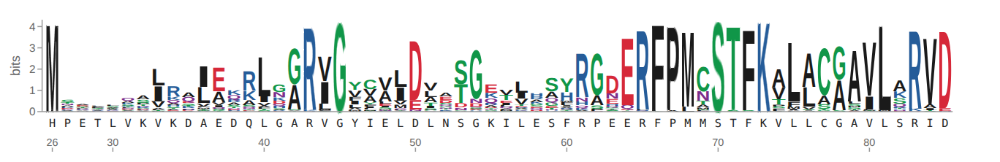
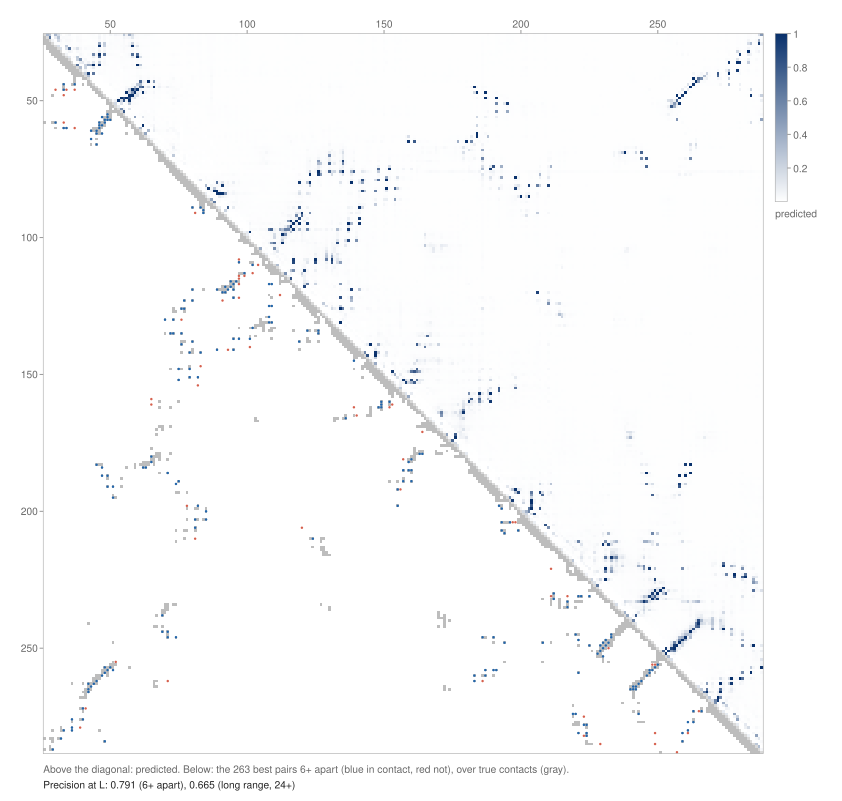
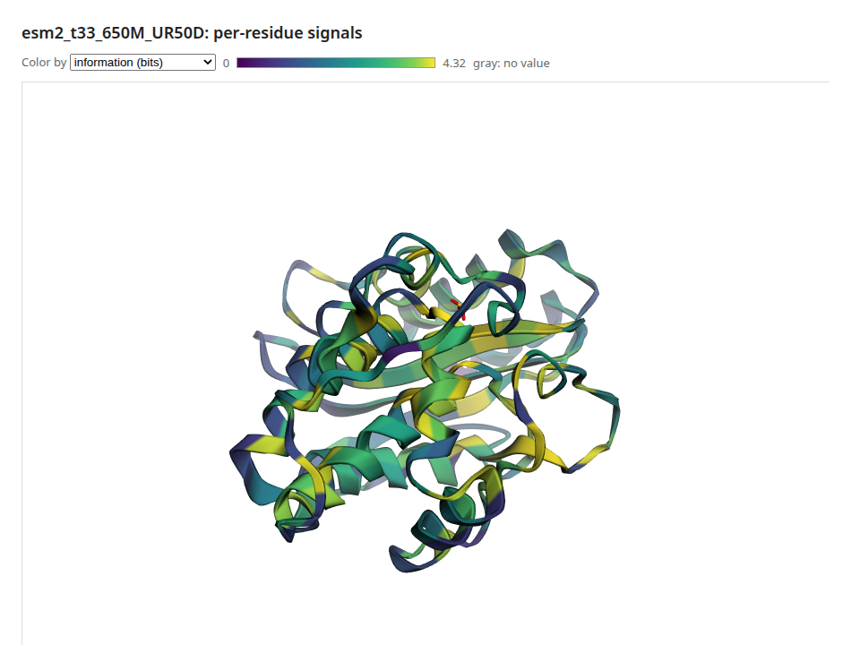

Protein Language Models¶
A protein language model reads an amino-acid sequence the way a text model reads words. ESM-2, the model family pulsatrix runs, was trained by hiding residues and predicting them. Along the way it learned which positions tolerate change, which residues touch in the folded protein, and which motifs mark functional sites. pulsatrix loads the published ESM-2 checkpoints natively in C++, on CPU or GPU, with no Python. You can run them, read their internal representations, train them further and explain their predictions.
For the whole path on one enzyme, see the recipe One protein end to end: TEM-1 β-lactamase.
It scores mutations zero-shot and reproduces ProteinGym's published ESM-2 numbers. It predicts which residues touch from the model's attention and checks them against experimental structures, draws all of it the way biologists read it (mutation maps, sequence logos, contact maps, residue tracks and the 3D structure), and explains its predictions residue by residue, with checks on those explanations, and it trains and fine-tunes them (see the roadmap and the research and plan).
What's inside¶
EncoderLM(encoder_lm.hpp): an ESM-2 masked language model. It has:- token embeddings with ESM's token-dropout scaling;
- pre-LayerNorm encoder layers with rotary attention (
EncoderBlock); - a final LayerNorm;
- the LM head, which maps each position to scores for all 33 tokens.
LoadEncoderLM(directory, backend): loads a Hugging Face ESM-2 directory (config.jsonplus safetensors), such asfacebook/esm2_t6_8M_UR50Dup toesm2_t33_650M_UR50D. ESM-2 is MIT-licensed.LoadEsmTokenizer(vocab.txt): ESM's tokenizer. Each residue is a token,<mask>hides one, and<cls>and<eos>mark the ends.ReadFasta/ParseFasta/WriteFasta: FASTA files, with multi-line sequences, comments and Windows line endings.
| Checkpoint | Layers | Width | Parameters | Size |
|---|---|---|---|---|
esm2_t6_8M_UR50D |
6 | 320 | 8M | 31 MB |
esm2_t12_35M_UR50D |
12 | 480 | 35M | 140 MB |
esm2_t30_150M_UR50D |
30 | 640 | 150M | 600 MB |
esm2_t33_650M_UR50D |
33 | 1280 | 650M | 2.6 GB |
Predicting a hidden residue¶
#include "pulsatrix/cpu_backend.hpp"
#include "pulsatrix/encoder_lm.hpp"
#include "pulsatrix/protein_sequences.hpp"
using namespace pulsatrix;
CPUBackend backend;
auto model = LoadEncoderLM("esm2_t33_650M_UR50D", &backend);
TextTokenizer tok = LoadEsmTokenizer("esm2_t33_650M_UR50D/vocab.txt");
// Ubiquitin with residue 11 (a lysine) hidden.
Encoding e = tok.encode("MQIFVKTLTG<mask>TITLEVEPSDTIENVKAKIQDKEGIPPDQQRLIFAGKQLEDGRTLSDYNIQKESTLHLVLRLRGG");
std::vector<float> ids(e.ids.begin(), e.ids.end());
Tensor logits = model->forward(Tensor(Shape({1, (int64_t)ids.size()}), &backend, ids));
// logits is (1, L, 33). Position 0 is <cls>, so residue 11 is position 11.
The 650M model puts lysine first, which is correct; the 8M model guesses glutamate. On a CPU, the 650M model takes about 6 seconds to load and run.
Download a checkpoint with any Hugging Face client, or fetch three files directly:
for f in config.json model.safetensors vocab.txt; do
curl -fsSL https://huggingface.co/facebook/esm2_t6_8M_UR50D/resolve/main/$f -o esm2_t6_8M_UR50D/$f
done
Reading the model's representations¶
After forward():
last_hidden_state()is(N, L, width): the per-residue representations usually called "ESM embeddings", taken after the final LayerNorm. Average over the residues, without<cls>and<eos>, for a per-protein vector.hidden_states()holds the embeddings, then every layer's output. Probes and sparse autoencoders read these. Early and middle layers often work better than the last.layer(i).mha().last_attention_weights()is(N, heads, L, L), each layer's attention. Some heads track which residues touch in the structure (see Predicting contacts).set_attention_observer()hands each layer's map to a callback duringforward(), so all of them can be read even withset_keep_activations(false).
Batches of different lengths. Pad each sequence with <pad> (id 1) and pass a mask:
model->set_padding_mask(keep); // (N, L): 1 for a real token, 0 for padding
Tensor logits = model->forward(ids);
Padding is kept out of attention and out of token dropout's count, as in Hugging Face's
attention_mask. clear_padding_mask() removes it.
Details that matter for correctness¶
- Token dropout. ESM-2 was trained with masked residues' embeddings zeroed. To match, every
embedding is scaled by
(1 - 0.12) / (1 - masked fraction), even when nothing is masked. Its outputs depend on this. - Stored RoPE frequencies. The checkpoints store their rotary frequencies rounded to fp16 (0.316162 rather than 0.316228). The model was trained with those values, and transformers uses them, so pulsatrix reads them from the checkpoint. Recomputing them exactly shifts every attention map by about 2e-4.
- Checkpoint names. Older checkpoints name LayerNorm parameters
weight/bias; transformers 5 savesgamma/beta. Both load. - Tokenizer quirks, kept for parity with
EsmTokenizer: - whitespace is dropped;
- lowercase and unknown letters aren't residues;
- a run of them becomes a single
<unk>(mktais one token).
Uppercase your sequences first.
Scoring mutations¶
A deep mutational scan measures how thousands of single and multiple substitutions change a
protein's function. ESM-2 predicts those effects with no training on the protein: a substitution
scores log p(mutant) - log p(wild type) at its position, and a multiple mutant the sum of its
substitutions. Higher means the model finds the variant more plausible.
#include "pulsatrix/variant_scoring.hpp"
VariantScorer scorer(*model, tok, &backend);
const std::string seq = "MQIFVKTLTGKTITLEVEPSDTIENVKAKIQDKEGIPPDQQRLIFAGKQLEDGRTLSDYNIQKESTLHLVLRLRGG";
ResidueLogProbs m = scorer.masked_marginals(seq); // one masked pass per residue
double s = scorer.score(m, seq, ParseMutations("K11R:I44A"));
std::vector<float> scan = scorer.single_mutant_scan(m, seq); // L x 20, every substitution
- Masked marginals (
masked_marginals), ProteinGym's choice for ESM-2, mask each residue in turn: one forward pass per residue, however many variants there are. - Wild-type marginals (
wild_type_marginals) read the same log-ratios from one unmasked pass. They are much faster and somewhat less accurate. - Pseudo-log-likelihood (
pseudo_log_likelihood) sumslog p(residue)with each residue masked: a score for a whole sequence.
Sequences longer than the model's 1024-token window are cut, for each masked position, to the
window ProteinGym's get_optimal_window picks around it.
Memory¶
Scoring needs only the logits, so VariantScorer runs the model with
EncoderLM::set_keep_activations(false): each layer frees the activations it would keep for
backward() and LRP as soon as its output is computed. A 1024-token ESM-2 650M pass otherwise
holds over 10 GB of them per sequence. VariantScoringOptions::max_pass_bytes (default 4 GiB)
bounds each pass by ScoringPassBytes: long windows run fewer per batch, and a pass that can't
fit even one sequence is refused instead of exhausting memory. Loading 650M itself peaks at about
10 GB on the host (roadmap FND-9), so on a 32 GB machine run it on the GPU, or watch the rest.
ProteinGym¶
tools/plm/pulsatrix_proteingym runs ProteinGym's substitution benchmark and reports its five
metrics (Spearman, AUC, MCC, NDCG and top-10% recall, in fitness_metrics.hpp, checked against
scipy, scikit-learn and ProteinGym's own code), beside the published numbers if given:
pulsatrix_proteingym esm2_t33_650M_UR50D --device hip \
--reference DMS_substitutions.csv --dms-dir DMS_ProteinGym_substitutions \
--assays BLAT_ECOLX_Stiffler_2015,RL40A_YEAST_Roscoe_2013 \
--published spearman_dms.csv --published-column "ESM2 (650M)" \
--published-scores zero_shot_substitutions_scores --published-score-column ESM2_650M
On 14 assays with ESM-2 650M (gfx1151), pulsatrix matches ProteinGym's published Spearman to the three decimals it reports. On the 13 shorter ones, compared variant by variant, every score is within 9e-5 of ProteinGym's:
| Assay | Length | Variants | Spearman | Published | Seconds |
|---|---|---|---|---|---|
| BLAT_ECOLX_Stiffler_2015 | 286 | 4996 | 0.7315 | 0.731 | 65.8 |
| BRCA1_HUMAN_Findlay_2018 | 1863 | 1837 | 0.5149 | 0.515 | 6902 |
| CALM1_HUMAN_Weile_2017 | 149 | 1813 | 0.2116 | 0.212 | 16.6 |
| DNJA1_HUMAN_Tsuboyama_2023_2LO1 | 65 | 2264 | 0.8029 | 0.803 | 3.3 |
| EPHB2_HUMAN_Tsuboyama_2023_1F0M | 66 | 1960 | 0.8105 | 0.810 | 3.4 |
| PIN1_HUMAN_Tsuboyama_2023_1I6C | 39 | 802 | 0.6699 | 0.670 | 1.4 |
| PR40A_HUMAN_Tsuboyama_2023_1UZC | 63 | 2033 | 0.8047 | 0.805 | 3.2 |
| RASH_HUMAN_Bandaru_2017 | 189 | 3134 | 0.4976 | 0.498 | 27.5 |
| RL40A_YEAST_Roscoe_2013 | 128 | 1195 | 0.5986 | 0.599 | 12.4 |
| SQSTM_MOUSE_Tsuboyama_2023_2RRU | 40 | 707 | 0.6180 | 0.618 | 1.5 |
| SUMO1_HUMAN_Weile_2017 | 101 | 1700 | 0.5093 | 0.509 | 7.7 |
| TCRG1_MOUSE_Tsuboyama_2023_1E0L | 37 | 1058 | 0.7692 | 0.769 | 1.2 |
| TPMT_HUMAN_Matreyek_2018 | 245 | 3648 | 0.5387 | 0.539 | 47.9 |
| UBC9_HUMAN_Weile_2017 | 159 | 2563 | 0.4726 | 0.473 | 19.5 |
BRCA1 is the one assay longer than the window; its two hours are what roadmap HIP-13 is for.
Predicting contacts¶
Two residues are in contact when they sit within 8 Å in the folded protein. ESM-2 was never
shown a structure, yet some of its attention heads point at contacts. ESM's contact head reads
them out (protein_contacts.hpp):
- Each head's attention map over the residues is made symmetric (
A + Aᵀ). - The average product correction (APC),
F - rowsum * colsum / total, removes what every residue attends to regardless of partner. - A logistic regression over every head's corrected map, trained by ESM's authors on a few structures and shipped in the checkpoint, gives a probability per residue pair.
#include "pulsatrix/protein_contacts.hpp"
EsmContactHead head = LoadEsmContactHead("esm2_t33_650M_UR50D", model->config());
ContactPredictor predictor(*model, tok, &backend);
ContactMap p = predictor.predict(seq, head); // L x L contact probabilities
ProteinStructure s = ReadStructure("1UBQ.cif"); // or .pdb
const StructureChain& chain = s.chain("A");
ContactMap truth = TrueContacts(chain); // Cβ (Cα for glycine) under 8 Å
ContactEvaluation e = EvaluateContacts(predictor.predict(chain.sequence(), head), truth);
// e.long_range.at_l: of the L best-scored pairs at least 24 residues apart, the fraction in contact
- One pass, one layer at a time. The prediction is a single forward pass over
<cls>+ the sequence +<eos>. Each layer's attention is folded into the result as soon as the layer finishes and is then freed, so memory doesn't grow with the number of layers.ContactOptions::max_pass_bytesbounds the pass as it does for scoring. - Heads instead of a regression.
average_heads(seq, heads)averages chosen heads' corrected maps.RankContactHeadsorders every head by its long-range precision at L on proteins with known structures. A 2026 paper (arXiv 2606.21876) reports that the best few heads, chosen on 10 proteins, do as well as more expensive methods.for_each_headstreams every head's map, for a head grid. - Precision at L.
ContactPrecisiontakes the top-scored pairsi < jwithin a separation range (CASP's short 6–11, medium 12–23 and long 24+) and counts how many are true contacts. Pairs with an unknown distance don't compete.PrecisionAtLuses the top L, L/2 and L/5, L being the sequence length. Where there are fewer pairs than the count, the missing ones count as wrong, as in ESM's owncompute_precisions.
Structures¶
ReadStructure reads PDB and mmCIF files (ParsePdb, ParseMmcif for text), such as
https://files.rcsb.org/download/1UBQ.cif or AlphaFold DB models. It keeps the first model's
protein chains, with the author's chain ids and residue numbers in both formats:
ATOMrecords, and selenomethionine (MSE, read as M) fromHETATM;- residues that have a Cα, so waters, ligands and nucleic acids drop out;
- the first of each atom's alternate locations.
StructureChain::sequence() is the observed sequence: residues missing from the file are
missing from it too, so predict on that sequence when you compare. ResidueDistances measures
Cβ (Cα for glycine), Cα, or a virtual Cβ placed from the backbone, as ESM's example and
trRosetta do. A residue missing the atoms it needs gives NaN, which the precision skips.
Results¶
tools/plm/pulsatrix_contacts predicts and scores contacts for a list of structures. With
--choose-heads, it also ranks the heads on other proteins and scores the average of the best
K:
pulsatrix_contacts esm2_t33_650M_UR50D --structures structures \
--proteins 1UBQ:A,2LZM:A,1BTL:A,4AKE:A,2PTN:A \
--choose-heads 1PGA:A,1CRN:A,1A3N:A,3P0G:B,5P21:A --top-k 10
Long-range precision with ESM-2 650M. Its ten heads were chosen on five other proteins; all are famous structures the model has likely seen sequences of, so expect lower numbers on new folds.
| Protein | Length | P@L | P@L/2 | P@L/5 | Top-10 heads P@L | Top-10 heads P@L/5 |
|---|---|---|---|---|---|---|
| Ubiquitin (1UBQ) | 76 | 0.645 | 0.895 | 1.000 | 0.632 | 0.933 |
| T4 lysozyme (2LZM) | 164 | 0.463 | 0.683 | 0.875 | 0.470 | 0.844 |
| TEM-1 β-lactamase (1BTL) | 263 | 0.665 | 0.824 | 0.923 | 0.681 | 0.904 |
| Adenylate kinase (4AKE) | 214 | 0.696 | 0.869 | 0.976 | 0.668 | 0.905 |
| Trypsin (2PTN) | 223 | 0.717 | 0.838 | 0.977 | 0.758 | 1.000 |
| Mean | 0.637 | 0.822 | 0.950 | 0.642 | 0.917 |
The ten heads sit in layers 22 to 32 of 33 and match the trained head without any regression. ESM-2 8M reaches a mean long-range P@L of only 0.12 on the same proteins.
Checked against transformers and biotite. tools/golden/make_contact_golden.py records
transformers' predict_contacts, the precision by both pulsatrix's definition and ESM's
compute_precisions, and biotite's reading of every structure. On ten proteins, pulsatrix's
predicted probabilities are within 3.1e-5 of transformers' with ESM-2 8M and 650M, and the
precisions are equal. Both formats of all 17 chains in 13 entries give the same sequences as
biotite, and distances within 1e-4 Å. CI runs the same checks on the tiny ESM-2 and on crambin
(tests/fixtures/structures).
Protein views¶
viz/protein_documents.hpp turns the model's outputs into four
viz documents, and viz/protein_views.hpp draws
them. Each is an SVG figure (for papers and CI: no fonts, GPU or browser needed) or an HTML page
holding that figure, whose cells show their values on hover. The pages have no scripts, so they
work offline.
| Document | Built by | Shows |
|---|---|---|
MutationMapDocument |
MakeMutationMapDocument(seq, scorer.single_mutant_scan(m, seq)) |
Every substitution's score, a row per amino acid and a column per residue, the wild type dotted |
SequenceLogoDocument |
MakeSequenceLogoDocument(m, tok, seq) |
What the model expects at each residue: letters stacked to the position's information content, colored by chemistry |
ContactMapDocument |
MakeContactMapDocument(seq, predicted, &truth) |
Predicted contacts above the diagonal; below, the structure's contacts in gray and the L best predictions as dots, blue if right and red if wrong, with the precision |
ResidueTracksDocument |
Any per-residue values, plus annotated stretches | Tracks stacked under the sequence: MeanSubstitutionScore (how much the model minds a change), InformationContent, or your own |
#include "pulsatrix/viz/protein_views.hpp"
ResidueLogProbs m = scorer.masked_marginals(seq);
MutationMapDocument scan = MakeMutationMapDocument(seq, scorer.single_mutant_scan(m, seq), "masked_marginals");
std::ofstream("scan.svg") << RenderMutationMapSvg(scan);
std::ofstream("logo.html") << RenderSequenceLogoHtml(MakeSequenceLogoDocument(m, tok, seq));
ResidueTracksDocument tracks;
tracks.sequence = seq;
tracks.tracks.push_back({"mean substitution score", MeanSubstitutionScore(scan), /*signed=*/true});
tracks.features.push_back({"catalytic motif", 70, 73, "site"});
std::ofstream("tracks.svg") << RenderResidueTracksSvg(tracks);
ESM-2 650M on TEM-1 β-lactamase (1BTL): the logo of its first 60 residues. The catalytic serine's motif, S70-T-F-K73, is the most conserved stretch.

Its contact map against the crystal structure: 66% of the top L long-range predictions are right.

The structure in 3D¶
RenderStructureHtml(structure_text, chain, tracks) draws a PDB or mmCIF file with
3Dmol.js and colors the chain by any track, with a menu to switch
tracks. Hovering a residue shows its value. Residues are matched by residue_ids (author number
plus insertion code, ResidueIds(chain) gives them), or one for one when the chain's sequence is
the tracks' sequence. 3Dmol.js 2.5.5 loads from jsDelivr, pinned and checked by its hash, or is
copied into the page with HtmlScripts::Inline (tools/render/fetch_vega.sh downloads it).

From the command line¶
tools/plm/pulsatrix_protein_views runs all of it for one protein, from a sequence or a
structure, and writes each document as JSON, SVG and HTML, plus the structure page:
pulsatrix_protein_views esm2_t33_650M_UR50D --structure 1BTL.cif --chain A --out tem1/ --device hip
For TEM-1 with 650M on gfx1151, that takes a minute, most of it the masked marginals (one pass per
residue). pulsatrix_svg draws any saved document again: pulsatrix_svg tem1/contact_map.v1.json
-o contacts.svg.
Positions are numbered from the document's first_position, one per residue. A structure whose
author numbering skips numbers (TEM-1's Ambler numbering skips 239 and 253) is numbered
consecutively in the figures; the structure page uses the real ids.
Training and explaining¶
EncoderLM is an ordinary Module, so the rest of the library applies:
backward()gives gradients for every parameter, andset_requires_gradfreezes parts for fine-tuning.TokenCrossEntropyLosswith ignore-index -100 is the masked-LM loss.propagate_relevance()explains a logit with LRP and returns relevance per input token.propagate_relevance_by_layer()stops at every layer, which is what attribution graphs use;propagate_hidden_relevance_by_layer()starts from the representations, for your own head.backward_hidden()starts the backward pass from the representations, for a head of your own.
Training and fine-tuning¶
protein_training.hpp has ESM-2's training pipeline:
MaskedLMCollator. It masks sequences as ESM-2 was trained:- each residue is picked with probability 0.15;
- of those, 80% become
<mask>, 10% a random amino acid and 10% stay; - sequences longer than 1,024 tokens are cropped to a random window;
- batches are padded, with a padding mask.
A seed gives the same batches on every platform. Token dropout is the model's own forward pass.
- ClusterSampler. It draws a cluster uniformly, then one of its members, as ESM-2 drew
UniRef50, so large families don't dominate.
- InitializeEsm. It initializes a model for training from scratch as transformers does.
- MaskedLMForwardBackward. One training step's loss and gradients.
- EvaluateMaskedLM. Perplexity and accuracy on held-out sequences, always masked the same
way.
#include "pulsatrix/protein_training.hpp"
EncoderLM model(ReadEsmConfig("esm2_t6_8M_UR50D/config.json"), &backend);
InitializeEsm(model, /*seed=*/0);
MaskedLMCollator collator(tok, &backend);
AdamWOptimizer opt(4e-4f, &backend, 0.01f, 0.9f, 0.98f);
TokenCrossEntropyLoss loss(&backend);
MaskedLMBatch batch = collator.collate(sequences);
opt.zero_grad(model);
float l = MaskedLMForwardBackward(model, batch, loss);
opt.step(model);
It matches transformers. On a padded, masked batch, one training step's loss and the
gradient of every parameter match EsmForMaskedLM's within 1e-4 (relative). Three AdamW steps
match torch.optim.AdamW's losses and weights
(tools/golden/make_esm_training_golden.py, run in CI on the tiny model).
tools/plm/pulsatrix_train_esm trains or evaluates:
python3 tools/plm/fetch_uniref50_sample.py ~/.cache/pulsatrix/uniref # ~95k UniRef50 representatives
pulsatrix_train_esm --config esm2_t6_8M_UR50D/config.json --vocab esm2_t6_8M_UR50D/vocab.txt \
--train train.fasta --valid valid.fasta --out run/ --steps 4000 --device hip
pulsatrix_train_esm --evaluate esm2_t33_650M_UR50D --valid valid.fasta --max-tokens 1024
The published checkpoints on 2,000 held-out sequences of that sample (85,498 masked tokens):
| Model | Perplexity | Accuracy | Published perplexity |
|---|---|---|---|
| ESM-2 8M | 10.89 | 27.8% | 10.33 (Lin et al. 2023) |
| ESM-2 650M | 5.96 | 45.2% | 6.95 (Lin et al.); 7.00 (BioNeMo, on a 2024 UniRef50 sample) |
The sample isn't held out from ESM-2's training data (UniRef 2021_04), which likely explains 650M's lower perplexity here. Full pretraining is far beyond one workstation, and bf16 (HIP-11) isn't done.
From scratch. An ESM-2-8M-shaped model (6 layers, width 320), initialized with
InitializeEsm, trained on gfx1151. The run used 4,000 steps of 16 sequences cropped to 512
tokens, AdamW at 4e-4 with 500 warmup steps and linear decay, β₂ 0.98, and clipping at 1. Its
held-out perplexity, on 500 sequences:
| Step | 0 | 500 | 1,000 | 2,000 | 3,000 | 4,000 |
|---|---|---|---|---|---|---|
| Perplexity | 35.7 | 14.9 | 14.7 | 14.3 | 14.2 | 14.1 |
That is below the 18.2 that amino-acid frequencies alone give, so the model learned from
context, but far above ESM-2 8M's 10.9. It saw about 2.5 million masked tokens; ESM-2 trained on
hundreds of billions. The run took 3.7 hours (about 3.3 s per step: GPU speed is roadmap item
HIP-13). training_log.v1.json draws as an HTML page with pulsatrix_svg.
Heads for fine-tuning¶
SequenceHead is a linear layer on the representations:
Pooling::Meanaverages each sequence's residues, for per-protein labels.Pooling::PerResidueapplies to every token, for per-residue labels.
Train it alone on a frozen encoder (a probe), or with the encoder: pass its backward() to
EncoderLM::backward_hidden(). Its propagate_relevance() gives a head's relevance at the
representations, for propagate_hidden_relevance_by_layer().
tools/plm/pulsatrix_finetune_esm runs two tasks on the GPU:
- Per protein. A deep mutational scan's fitness, learned from 80% of its variants and tested on the rest.
- Per residue. How buried each residue is (Cβ neighbors within 10 Å), learned on seven structures and tested on three others.
| Task | Model | Zero-shot | Probe | Fine-tuned |
|---|---|---|---|---|
| Ubiquitin DMS (239 test variants) | 8M | 0.16 | 0.36 | 0.56 |
| TEM-1 DMS (999 test variants) | 8M | 0.43 | 0.28 | 0.27 |
| Burial (3 test proteins) | 8M | 0.68 | ||
| Burial (3 test proteins) | 650M | 0.82 |
Held-out Spearman correlations. On ubiquitin, fine-tuning beats both the probe and the zero-shot score. On TEM-1, neither head beats the zero-shot score: a single substitution barely moves the mean of 286 residues' representations. Use per-residue features at the mutated position, or the zero-shot score itself, for single mutants of long proteins.
Explaining residue by residue¶
EncoderExplainer (protein_explanations.hpp) runs AttnLRP from one of four targets back to
the input residues:
| Target | Explains |
|---|---|
EncoderTarget::MaskedToken(i, 'L') |
The logit of L at residue i, with i masked |
EncoderTarget::ForMutation(ParseMutations("K48F")[0]) |
The mutation's log-odds, logit(F) - logit(K) at the masked residue: its masked-marginal score |
EncoderTarget::ProteinHead(head) |
A linear head on the mean of the residues' representations (a per-protein regression or probe) |
EncoderTarget::ResidueHead(head, i) |
A linear head on residue i's representation |
#include "pulsatrix/protein_explanations.hpp"
EncoderExplainer explainer(*model, tok, &backend);
ResidueRelevance r = explainer.explain(seq, EncoderTarget::ForMutation(ParseMutations("K48F")[0]));
// r.residues: one value per residue; r.layers: per token after every layer; r.value: the log-odds
AttributionGraph g = explainer.relevance_graph(seq, target, options); // for Neuronpedia's viewer
It matches LXT. LxtAttnLrpConfig() applies AttnLRP's rules as LXT does: the identity rule
on GELU, the uniform rule at attention's matmuls, the epsilon rule elsewhere, and LayerNorm with
only its standard deviation held constant. LXT has no ESM patch, so
tools/golden/make_esm_attnlrp_reference.py applies those rules to transformers' ESM-2 the way
LXT's BERT patch does. On all four targets, for every token and after every layer:
| Model | Worst difference (relative to the largest relevance) | Lowest correlation |
|---|---|---|
| Tiny random ESM-2 (CI) | under 1e-4 | 1.0000 |
| ESM-2 8M | 1.5e-4 | 1.000000 |
| ESM-2 650M | 4.8e-5 | 1.000000 |
Plain gradient × input, the negative control, misses by more than 5%.
The checks¶
A residue map can look plausible and still not explain the model: a 2026 study found integrated gradients on a well-performing ESM-2 classifier didn't recover annotated epitopes. So explanations come with checks against something independent of how they look:
DeletionCheck. It masks residues in the order they support the value, and compares that with random orders. A faithful explanation moves the value toward zero faster.RandomizationCheck(Adebayo et al. 2018). It randomizes the weight matrices from the LM head down, layer by layer, and re-explains. An explanation that stays the same isn't explaining the model.CompareResidueSignals. It compares a per-residue explanation with an independent signal:DmsPositionSensitivity, how much a deep mutational scan's single mutants hurt at each residue;AlignmentConservation, from an A2M alignment such as ProteinGym's.RelevanceProfile. It turns explanations into a per-protein signal to compare: how much the model draws on each residue when predicting the others. That's one explanation per residue.
tools/plm/pulsatrix_explain_protein runs all of them:
pulsatrix_explain_protein esm2_t33_650M_UR50D --assay BLAT_ECOLX_Stiffler_2015 \
--reference DMS_substitutions.csv --dms-dir DMS_ProteinGym_substitutions \
--msa BLAT_ECOLX_full_11-26-2021_b02.a2m --profile --out tem1/ --device hip
ESM-2 650M on gfx1151, explaining each assay's most damaging single mutant:
| Ubiquitin (RL40A_YEAST, K48F) | TEM-1 (BLAT_ECOLX, K71S) | |
|---|---|---|
| Deletion: value left (area), relevant first vs random | 3.81 vs 5.23: faithful | 3.27 vs 5.23: faithful |
| Randomization: similarity after the LM head; after the top 14 layers (32 to 19) | 0.25; 0.08 | 0.67; 0.83 |
| Profile vs DMS sensitivity: Spearman (top-10% overlap, chance) | 0.04 (0.29, 0.09) | 0.08 (0.19, 0.10) |
| Profile vs conservation | 0.03 (0.00, 0.09) | 0.10 (0.38, 0.10) |
| Conservation vs DMS sensitivity, for scale | 0.29 | 0.50 |
What this says:
- Deletion. Both explanations rank residues by how much the prediction needs them.
- Randomization. Ubiquitin's explanation depends on the whole model. TEM-1's doesn't: its residue ranking survives randomizing the top 14 layers and only drops (to 0.16) once layer 18 is randomized too. So most of what that map shows comes from the lower layers.
- Agreement. Neither protein's relevance profile matches the functional signals: what the model draws on to predict residues isn't where mutations hurt or where the family is conserved. Read relevance maps as what the model uses, not as maps of function.
The run takes 2 minutes for ubiquitin (128 residues) and 6 for TEM-1 (286), most of it the profile.
Probes and features¶
What do the representations encode? protein_concepts.hpp answers this two ways, with labels
from Swiss-Prot. tools/plm/fetch_swissprot_annotations.py draws 3,000 reviewed proteins
that have 3D structures, so their helices and strands come from structures. Their binding and
active sites, disulfides, signal peptides, transmembrane spans and more come along too.
- Probes ask whether a concept can be read out of a layer linearly.
EmbedResidueskeeps each residue's representation at chosen layers.TrainLinearProbetrains a softmax probe and scores held-out proteins.
Every probe comes with two controls:
- the same probe on the residue's local sequence (one-hot, ±3 residues, from
SequenceWindowFeatures);
- the same layer of a randomly initialized model.
Hewitt and Liang's control task, labels fixed per token type, is no control here: with only 20
amino acids, a linear probe learns it perfectly from any representation.
- Features ask which directions the model uses unprompted, following InterPLM.
1. A sparse autoencoder (featurizer) is
trained on one layer's residues, each dimension standardized.
2. MatchConcept scores every feature against every concept, by the best F1 over activation
thresholds.
3. The baselines are single neurons and an SAE trained on a random model.
tools/plm/pulsatrix_probe_esm runs both. --probes tests every layer. --sae trains the SAE
and writes a feature dashboard for each concept's best feature. When an AlphaFold model is
available, the dashboard draws the top protein in 3D, colored by the feature (--structures).
Probes, on 600 proteins split 80/20 by protein. Each cell gives the probe at its best layer, then its gain over the local-sequence control, then the random model at that layer. Secondary structure is three-state balanced accuracy; the other concepts are ROC AUC.
| Concept | ESM-2 8M | ESM-2 650M (layer 33) |
|---|---|---|
| Secondary structure | 0.66 (layer 5), +0.20, 0.40 | 0.71, +0.25, 0.38 |
| Binding site | 0.83 (layer 3), +0.13, 0.67 | 0.80, +0.11, 0.67 |
| Active site | 0.89 (layer 5), +0.07, 0.75 | 0.93, +0.11, 0.72 |
| Zinc finger | 0.995 (layer 5), +0.25, 0.95 | 0.99, +0.24, 0.50 |
| Motif | 0.76 (layer 6), +0.18, 0.63 | 0.70, +0.12, 0.59 |
| Signal peptide | 0.999, +0.11, 0.86 | 0.999, +0.11, 0.82 |
| Transmembrane | 0.997, +0.08, 0.92 | 0.99, +0.07, 0.87 |
| Disulfide bond | 0.997, +0.00, 0.997 | 0.99, −0.01, 1.00 |
- The controls matter.
- Disulfide bonds score 0.99 at every layer, and on the random model too: the probe only finds the cysteines, and sequence alone does as well.
- Signal peptides, transmembrane spans and coiled coils are nearly as easy from local sequence and composition, so the model's gain there is small.
- Where the model adds most. Secondary structure, zinc fingers and binding sites gain the most over local sequence. 650M's last layer is ahead on secondary structure and active sites.
- Layer 0 isn't a baseline. Its representation is the residue alone, without neighbors, which is why it falls below the local-sequence control.
- Possible leakage. The split separates proteins but doesn't cluster them by sequence, so homologs on both sides can flatter the numbers.
SAE features, ESM-2 8M layer 4: 2,560 latents trained on 1,600 proteins' residues, held-out L0 17, 66% of the variance explained. Best F1 of a single feature against each concept on 400 held-out proteins:
| Concept | SAE feature | Best single neuron | SAE on a random model |
|---|---|---|---|
| Disulfide bond | 0.69 | 0.18 | 0.39 |
| Transmembrane | 0.52 | 0.53 | 0.34 |
| Signal peptide | 0.44 | 0.34 | 0.08 |
| Zinc finger | 0.29 | 0.05 | 0.12 |
| Coiled coil | 0.29 | 0.05 | 0.26 |
| Beta strand | 0.16 | 0.33 | 0.13 |
| Helix | 0.16 | 0.50 | 0.11 |
| Binding site | 0.12 | 0.08 | 0.11 |
| Active site | 0.05 | 0.05 | 0.03 |
The zinc-finger feature's dashboard shows it lighting the annotated zinc fingers of its top proteins, such as Q9LZR5's residues 267 to 287, with an activation histogram and the protein's AlphaFold model colored by the feature.
- Where features win. Sparse, local concepts get single features that neurons don't have: disulfide-bonded cysteines, signal peptides, zinc fingers, coiled coils.
- Where neurons win. Concepts covering a third of all residues, such as helices and strands, are spread over many features, so no single sparse one recalls them.
- The random model. A random model's SAE finds some concepts too: disulfides, since a feature for "cysteine" goes a long way, and coiled coils, from their sequence repeats. So a feature matching a concept is a lead to check, not proof the model learned it.
Checking against Hugging Face¶
tools/golden/make_esm_golden.py records transformers' outputs for a model:
- logits;
- every layer's hidden state;
- every attention map;
- a padded batch;
- the tokenizer's ids on edge cases.
tests/encoder_lm_test.cpp compares pulsatrix with them. CI runs it on a tiny random ESM-2
(tests/fixtures/hf_tiny/esm). Setting PULSATRIX_GOLDEN_DIR to a directory of downloaded
models checks those too. Worst differences on the real checkpoints (transformers 5.18, float32):
| Model | Hidden states (relative) | Attention (absolute) | Logits (relative) |
|---|---|---|---|
| ESM-2 8M | 2.8e-6 | 4.4e-6 | 2.7e-6 |
| ESM-2 650M | 3.7e-6 | 1.3e-5 | 3.6e-6 |
That is float32 precision: transformers' own float32 run differs from float64 by about 3e-6 in
attention. The tokenizer matches EsmTokenizer on every case recorded.